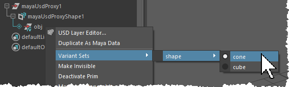

变量是基本体的若干变体之一，例如用于填充群组的任意一组角色。基本体可以有多个变量集，例如，基础网格的一个变量集、服装的另一个变量集等。在每个变量集中，变量是可供选择的命名选择。
将 define_usd_prim 节点添加到图表，并将其输出直接连接到 add_to_stage 节点或另一个 define_usd_prim 节点的 children 端口。
此基本体将用作已解析变量的容器。您可以将 type 保留为“Xform”，以便轻松移动已解析的变量。
在 variant_set_definitions 端口上单击鼠标右键，然后选择 Usd::VariantSet::define_usd_variant_set。
在 define_usd_variant_set 节点中，将 variant_set_name 设置为要用于变量集的名称，例如“shape”。
将 selection 设置为集内要用作默认变量的变量名称。（请注意，您尚未创建具有此名称的变量。）
在 children 上单击鼠标右键，然后从 Create Node 菜单中选择一个选项，为集中的每个变量创建基本体定义。在子基本体定义节点中，将 variant_set_name 设置为所创建变量集的名称，将 variant_name 设置为子基本体表示的单个变量的名称。单个变量名称之一应是您设置为默认变量的名称。
要创建其他变量集，请将其他 define_usd_variant_set 节点添加到容器基本体定义的 variant_set_definitions 端口，并将其他基本体定义添加为子项。
要按程序选择变量，请使用 set_variant_selection 节点。指定受影响基本体的路径、变量集名称以及要选择的变量的名称。
也可以在主场景中实时选择变量。在 Maya 大纲视图中的变量容器上单击鼠标右键（其图标具有覆盖标记，以显示其具有变量），然后从“变量集”(Variant Set)菜单中选择选项。与在 Maya 中进行的任何其他更改一样，这不会存储在图表的后台文件输出中。
